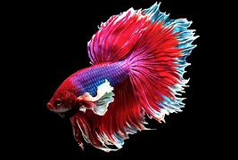

A Diferença entre Peixinhos e Peixotos
"peixinhos são peixes (animais aquáticos coisados) pequenos de tamanho inferior ao tamanho médio de um peixe."
estrutura corporal de um peixinho
ilustração de um peixinho

imagem de um peixinho
peixinhos perículosos1!!!!